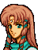
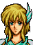
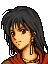
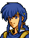

Opening 1
・・・意外とレイドリックも
使いものにならなかったな
さて、どう料理してやろうかの・・・
・・・ベルドよ・・・
こ、これはマンフロイ様
いつこちらに・・・
そのようなことはどうでもよい
たかがレンスターのこせがれ一人に
何を手間どっておるか
はっ、申し訳ございません
近いうちに
必ずやリーフ王子の首を・・・
よいか
必ずあのこせがれを討ち取るのじゃぞ
でなければ
トラキアをそそのかしてまで
キュアン王子を討たせた意味がなかろう
・・・あのものどもは
いまだにトラバントを
キュアン王子の敵と思っておるようで・・・
クックックッ、あわれなものよ
トラキアごときにレンスターの行軍時期を
特定できるほどの情報力があるものか
トラバントの野心を利用して
南北トラキアを共食いにさせる・・・
そちの策略は図に当たったというわけじゃ
おほめにあずかり
きょうしゅくです・・・
だが、その後が問題じゃな
ちとレンスターのこせがれを
あなどりすぎておったのではないか？
やはり
レンスターが落城したときに
暗殺しておくべきであったかもしれぬ・・・
しかし、リーフ王子が
北トラキアの反乱分子どもを一つに
まとめたのは事実でありましょう
それらをまとめて叩けば
反乱分子どもの士気も地におちます
期待が大きければその反動もまた・・・
さらに都合の良いことに
われらにとって何かと邪魔な
フリージをも倒してくれておるようで・・・
なに、聖戦士の血をひいているとはいえ
しょせんはレンスターに伝わる
地槍ゲイボルグもあつかえぬていど
このベルドの敵ではありませぬ
ならばよいがの・・・
念のためじゃ
魔戦士を五体、かしてやろう
これはありがたい
私めが作ったものもあわせて六体・・・
これで結界は万全ですな・・・
ふむ・・・
ではベルドよ
たのんだぞ
良い知らせを待っておる・・・
はっ・・・
Opening 2

アウグスト
みんなは大丈夫だろうか？

手はずはととのっております
あとはそれぞれが
責任をはたすのみ・・・
六つの結界をやぶらねば
祭壇は開かない
そういうことだな
はっ・・・
そのためには
塔の中央を６併所同時に
制圧せねばなりません
グズグズしていれば
増援が出てくる恐れもあります
ここは多少の犠牲を覚悟してでも
一気に制圧するのです
そうか・・・
わかった
では、行こう
At the start of Leif's phase, with his units waiting on every magic circle
なっ、なんだと！
封印が破られたというのか！！
ぬぬっ・・・
リーフめ・・・
こしゃくなマネを・・・
ならばきさまらも
あの世への道連れにしてやるわ！
このストーンで
石となってねむるがよい！
After seizing
・・・勝った・・・のか・・・
はっ・・・
北トラキアにおける
ロプトの勢力は
これで消滅いたしました
トラキアの民は
ロプトのくさびから
ようやく解放されたのです
これもみな王子の力によるもの
ほんとうに・・・
よくがんばられましたな
いや・・・アウグスト・・・
あなたのおかげだ
あなたがぼくを導いてくれたのだ
何も知らなかったぼくに
あなたは君主としてのあり方を
教えてくれた
アウグスト、ありがとう
あなたにめぐりあえて幸せだった
心から礼を言う・・・
これは・・・こまりましたな・・・
今だから申し上げますが
私はある方の命により
王子の軍師となったのです
最初は、正直申し上げて
北トラキアの解放など
無理だと思っておりました
ですが
王子のあまりにひたむきなお姿に
いつのまにか
この方こそをと
思うようになったのです
それゆえに、いろいろと
ご無礼なことも申し上げました
どうかお許しください
いや
アウグストの言葉はいつも
ぼくの心に重くひびいた
人々の苦しみや悲しみの深さを
ぼくはあなたから教えられた
アウグスト
これからもぼくを助けて欲しい
ぼくにはあなたが必要なんだ
はっ・・・
王子がお望みとあらば・・・
Only if Finn is alive
リーフ様
セリス軍からの知らせによると
コノートは解放軍によって
制圧されたそうです！
えっ
コノートが陥落したのか！
ではセリス様は？・・・
マンスター攻略の手助けをするため
こちらに向かわれているそうです
われらが勝利をまだご存知では
ないのでしょう
そうか・・・
わずか一日であの堅固なコノート城を
落とされるとは、さすがはセリス様だ
だが、できるものならブルーム王は
わが手で討ち果たしたかったな
はっ・・・しかしリーフ様
これでようやく
北トラキアは解放されたのです
人々は解放軍の勝利に歓喜しています
このマンスターでも人々は熱狂して
王子の名をさけんでおります
トラキアは英雄キュアンの子により
解放されたのだと・・・
フィン
確かに長く苦しい日々だった
でもぼくは
フィンがいてくれたから
がまんができた
フィンの方がぼくよりも
ずっと苦しかったはずだから
フィンは自分を犠牲にして
ぼくをここまで育ててくれた
ぼくはフィンのひざの上で
大きくなったようなものだ
ぼくはどうすれば
おまえに
報いることができるのだろう
リーフ様
北トラキアの４つの王国
レンスター、アルスター
コノート、マンスターは
王子のレンスター王国をのぞき
王位継承者たる男子がおりません
ゆえに、それらの国民たちは
リーフ様の下に統一されることを
望んでいます
リーフ様
彼らの望みを
かなえてやってください
トラキアの悲劇は小国家の対立と
くりかえされる戦争によるもの
トラキアを統一し
かつてダインとノヴァのもとで繁栄した
理想の王国を築き上げる・・・
それは亡きキュアン様の夢であり
私の願いでもあるのです
うん、わかっている
ぼくはもう逃げない
ぼくには
北トラキアを守る義務がある
トラキアの統一がなるかどうかは
トラバント王の出方次第だが
できるだけのことはしたいと思う
フィン
それでいいか・・・
はい、リーフ様
Only if Eyvel is alive

リーフ様
残念ですが、私たちはもう
フィアナへ戻らねばなりません
えっ！ どうしてなんだ？
エーヴェルは
一緒に来てくれないのか！？
海岸では
また海賊達があばれているそうです
村人達を見捨てるわけにはまいりません
それに、私たちでは
もうこれからの戦いには
お役にはたてません
だけど・・・
エーヴェル・・・
リーフ様、帝国との戦いに勝利して
レンスターに戻られる日を
楽しみにしています
そのときは
フィアナのみんなと一緒に
おいわいにかけつけますから
・・・そうだね・・・
わかったよ、エーヴェル
ぼくはきっと戻ってくる
待っていてくれ・・・
はい
お待ちしています
リーフ様・・・
Only if Miranda is alive (forest route only)
リーフ王子
少しいいかしら
ミランダ王女？
どうしたんだ
私・・・
あなたに謝らなければ
ならないことがあるわ
ドリアスのことならもういいよ
あれはぼくの責任だし
ミランダが気にすることじゃない
それにアルスターは
セリス軍によって解放されたし
ミランダ王女も無事だと知って
国民も喜んでいるだろう
え、それはね・・・
だけど国民はレンスターとの
統合を望んでいるし
重臣達は
王子の妃になれってうるさいの
女だと思ってバカにしてるわ
４王家の中で生き残ったのは
ぼくとミランダだけだから
そう考える者がいてもしかたないよ
でも、ぼくはまだ・・・
王子は私がきらいなの？
それならそれで別にいいけど・・・
ちがうんだ
ぼくにはまだ
やらなければならないことがある
トラキアとの戦いや暗黒教団のこと
それにグランベル帝国も健在だし
北トラキアも守らなければならない
今はまだ、誰かが好きとかきらいとか
そんなことを考えるよゆうはないんだ
・・・・・・
いいわ
それなら、私はアルスターで
王子の帰りを待っています
でも、トラキア一つ倒せないような男なら
私の方から願い下げよ
いいわね、リーフ王子！
Only if Linoan is alive

リーフ様・・・
リノアン
北トラキアはぼく達の手に戻ったけど
ターラはまだトラキアに奪われたままだ
だけど、ぼくがきっと取り戻す
リノアンも一緒に来てくれるね？
はい
もちろんです！
リーフ様
Only if Dean is alive
リノアン公女
悪いが、俺は一緒には行けない
えっ
どうしてディーン？
どうしてですか！
トラキアは俺の祖国だ
もうこれ以上は戦えない
リノアンは王子とともにいけばいい
これからは王子が守ってくれる
ディーン・・・
どうしてそんなことをいうの・・・
私は・・・
ディーンがいないとだめなのに
リノアン？・・・
ディーンがいやなら
ターラに戻るのはあきらめます
だから
このまま一緒にいてください・・・
ばかなことをいうな
リノアン
おまえらしくもないぞ！
だが・・・もう少し考えてみよう
このままではリーフ王子も
あの方も傷つくことになる
それだけは、なんとしても
さけねばならんからな・・・
Only if Nanna is alive
Only if Mareeta is alive

・・・・・・

ナンナ様
ほらっ
もう言っちゃいなさいよ！
で、でも・・・
今、言えなかったら
ずっと後悔することになるわよ
いつまでも可愛い妹のままでいいの？
だけど
マリータ・・・
ううん
もうっ
じれったいわね！
リーフ様！
マリータか？
なんだ
そんな恐い顔をして？
ほら
ナンナ様・・・
リーフさま・・・
ナンナ、ありがとう
ぼくがここまで来れたのは
ナンナのおかげだよ
そんな、私なんて何も・・・
いや
ナンナとは兄妹みたいにして育ったけど
助けてもらったのはいつも
ぼくの方だった
ナンナがぼくを支えてくれたから
いつも勇気づけてくれたから
ここまでがんばれたのだと思う
ナンナ
この戦いが終わったら
ぼくもラケシスを探しに行く
そして、もし
ラケシスに会えたら
ぼくははっきりと言うつもりだ
大好きな
ナンナを・・・
ぼくにくださいって・・・
！・・・
リーフさま・・・
ぼくたちの戦いは
まだまだ終わらないけど
ナンナ、一緒に来てくれるね
はい、リーフさま・・・
リーフ様
セリス公子がお見えになりました

リーフ王子
応援に来たのだけど
その必要はなかったみたいだね
無事で安心したよ
セリス様！
これもみんなセリス様のおかげです
本当にありがとうございました
いや、北トラキアの解放は
王子が自分の力で成しとげたのだ
私は何もしていない
北トラキアは王子の下に
一つの国としてまとまるだろう
その豊かで大きな国が
帝国を相手に戦ってくれるとしたら
私たち解放軍にとって
これほど心強いことはない
リーフ王子
これからも共に
進んでもらえるだろうか
私たちのなすべきことはまだまだ多い
きっと
多くの困難が待ち受けているだろう
でも私は
リーフ王子と二人なら
乗りこえて行けると思う
かつて父上たちがそうであったように
私たちも生死を分かち合える友として
生涯変わらぬ友情を誓いたいんだ
はい！
私はセリス様を兄とも思っています
セリス様のお力になれるのなら
これほどうれしいことはありません
ではこの剣に誓おう
私たちは生まれたときこそちがうが
死ぬときは一緒だ
友として、兄弟として
ともに手を取り合い
この世界を救うと誓おう！
はい！
セリス様！！・・・
Veld: battle quote
くっくっくっ・・・
何も知らずわしに逆らうか・・・
ならばわが力を思い知れ！
Veld: defeat quote
ぐ・・・
このわしが・・・
バカな・・・
だが・・・
まだ終わりではないぞ・・・
わしが死んでも・・・
ロプトは滅びぬ・・・
ロプト帝国の復活は・・・
目の前に・・・
せまっておるのだ・・・
せいぜいそれまで
あがくのだな・・・
フフフ・・・ハハハハハ・・・
Veld: release quote
マンフロイ様
おゆるしを・・・
グフッ・・・